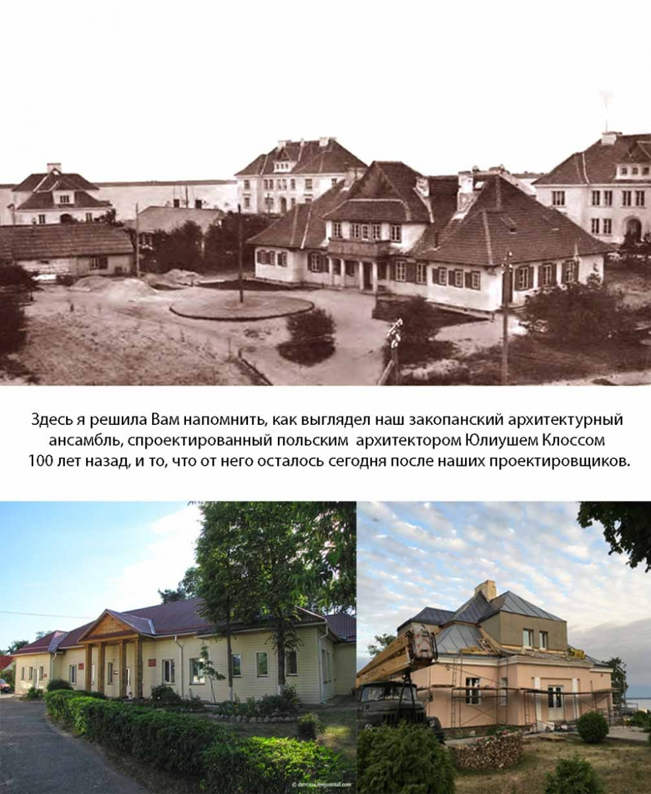
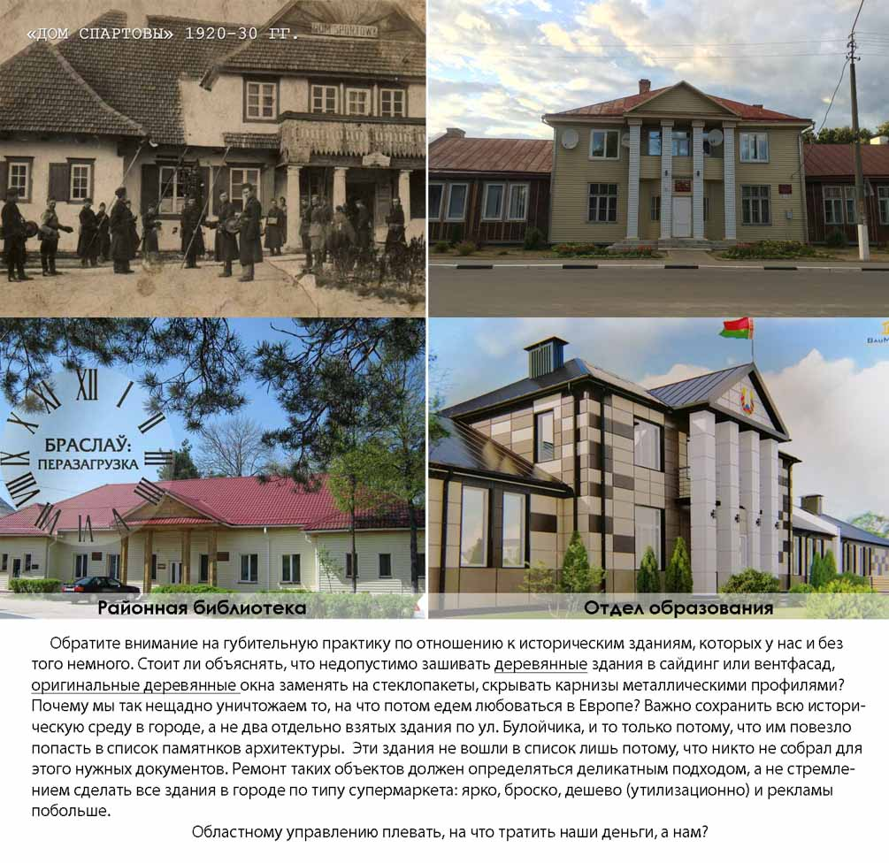
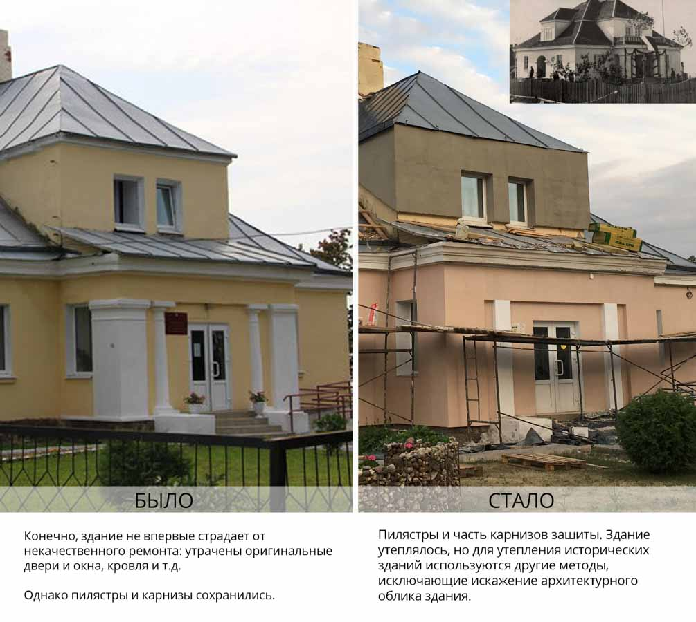
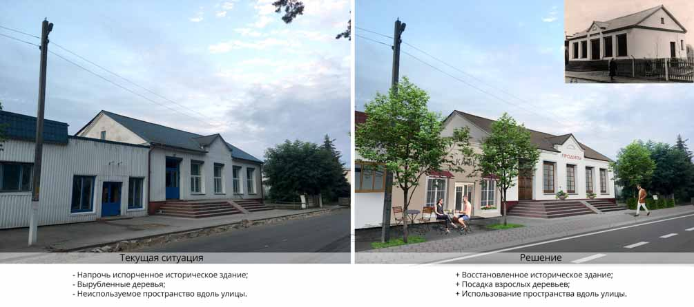
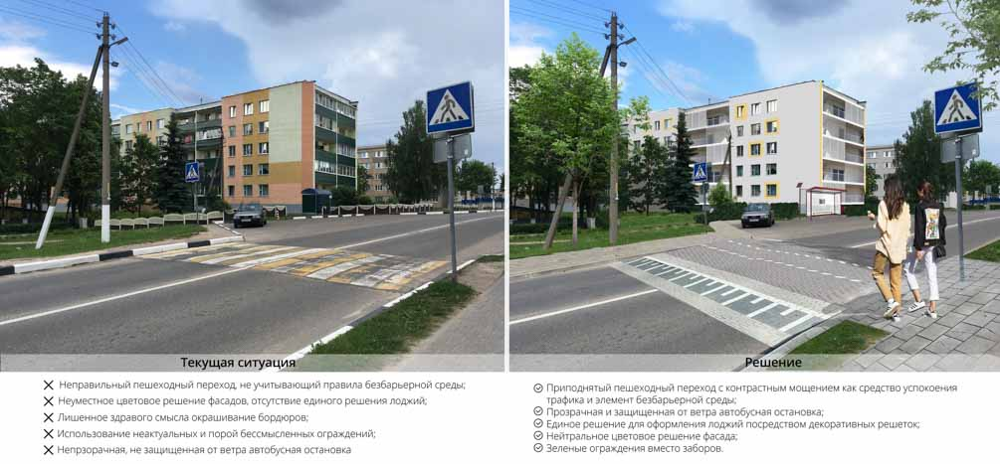
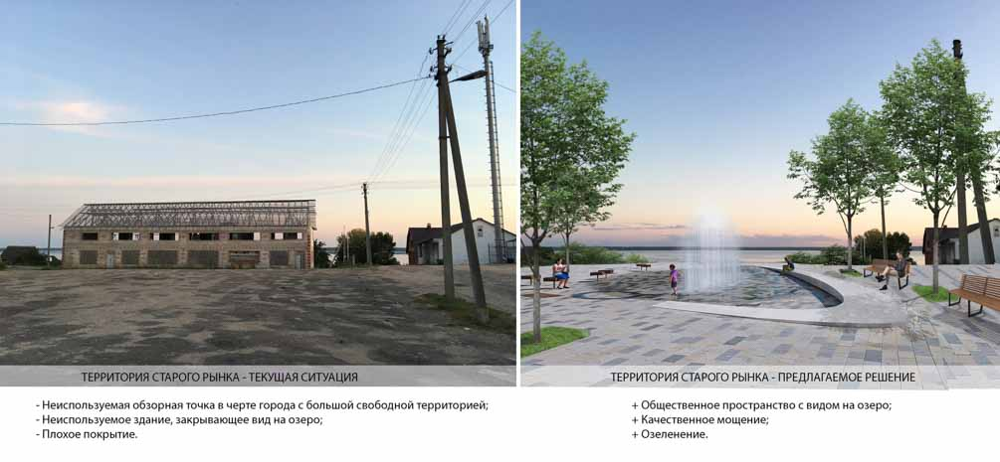
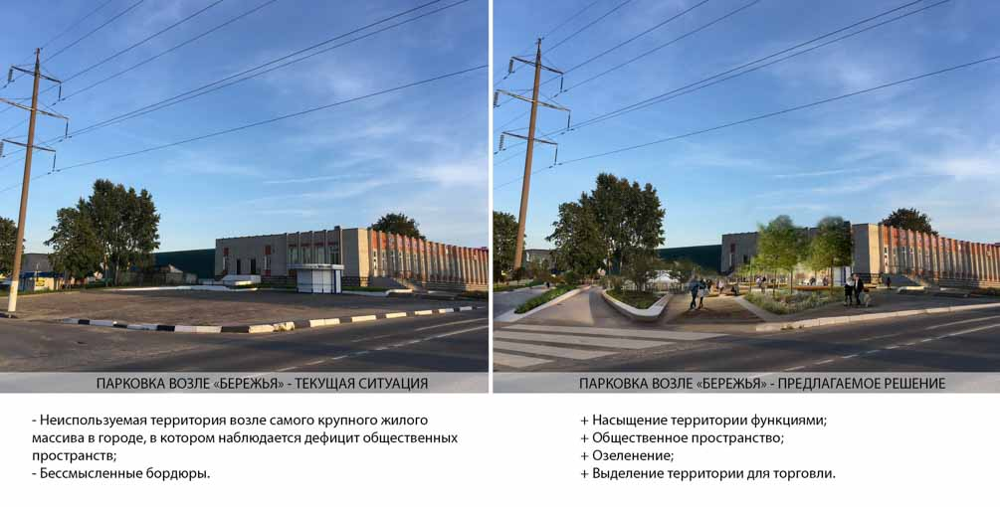
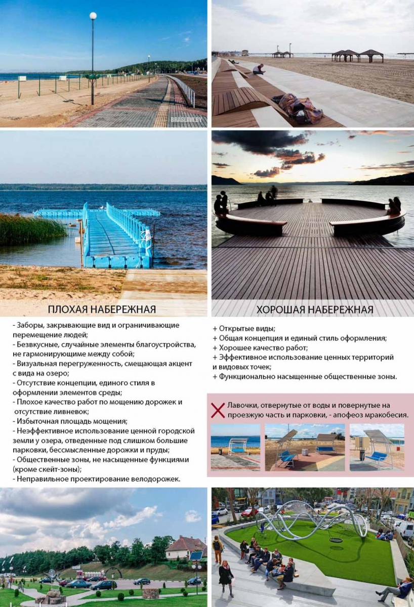

Braslav Urban Design: мнение о проблемах благоустройства в Браславе

В Браславе на космических скоростях готовятся к Дожинкам-2019. Сделано очень много, а к самому празднику будет сделано еще больше. И все бы хорошо, если бы не эти космические скорости..
Сегодня делимся с вами мнением о проблемах благоустройства в нашем городе, которое недавно вызвало резонанс в соцсетях, от браславчанки Виктории Сапель.
Я очень люблю свой город. Я в нем выросла, и мне здесь дорог каждый уголок. Но со временем возвращаться домой мне становится все сложнее: тот Браслав, который я вижу, ввергает меня в глубокое отчаяние. Все, что здесь делается, практически каждое новое «благоустройство» - это очередной шрам на теле города, которые когда-то придётся исправлять будущим поколениям, и мне в том числе.
Наш край уникален, наш город интегрирован в великолепные природные ландшафты. Окружающие нас территории являются частью Национального парка, и десятки тысяч туристов ежегодно приезжают посмотреть на ту красоту, в которой нам повезло родиться и жить. Эти факторы обязывают местные власти и горожан к двойной степени ответственности по отношению ко всему, что происходит в Браславе. Но, к сожалению, прямо сейчас мы наблюдаем обратное.
Речь не пойдёт о зарастающих озёрах и об экологических проблемах в целом. Это, наверняка, и так известно большинству из Вас. Речь пойдёт о том, мимо чего мы проходим каждый день и не замечаем, а именно (как ни странно) о городе, в котором мы живём.
• Знаете ли Вы, что в Браславе находится один из самых крупных сохранившихся архитектурных ансамблей в «закопанском» стиле? Если да, то что Вы чувствуете, когда видите, как к Дожинкам варварски зашивают фасады здания соц.обслуживания, которому уже больше 100 лет?


• Задумывались ли Вы, стоя на каком-либо из пешеходных переходов, как живётся в нашем городе маломобильным группам населения? Есть ли возможность у человека в инвалидной коляске, у бабушки, у мамы с коляской или у человека со сломанной ногой беспрепятственно перемещаться по городу?

• Замечали ли Вы, что единственная в городе площадка для детей дошкольного возраста находится прямо у дороги?
• О чем Вы думаете, когда, глядя в окно своей квартиры, вместо двора видите там асфальтовое поле, заставленное машинами?

• Задумывались ли Вы, сколько денег ежегодно городской бюджет тратит на окрашивание бордюров, заборов и камней?

• Нравится ли Вам идти в поликлинику или на прогулку в Лесничевку вдоль километрового забора, который выше Вашей головы? Быть может, Вам понравится сквозь сетку забора смотреть на закат на набережной?
• По тротуару или по дороге Вы поедете, когда захотите прокатиться на велосипеде?
• В очередной раз перепрыгивая через лужу, задумывались ли Вы, наконец, откуда эти лужи берутся и почему ни на одной улице в нашем городе нет ливневых стоков?
• Как Вам нравятся кафе, автобусные остановки, магазины и заборы из металлического листа, которым обычно закрывают мусорные контейнеры?

Конечно, все вопросы и проблемы не впишутся в условный регламент статьи и тем более в диапазон ее восприятия; моей целью было обозначение вектора для последующей мысли.
В настоящий момент в городе проводятся работы по благоустройству, однако значительная часть принятых решений лишь усугубляет ситуацию. Городское управление пытается сделать лучше, но не знает КАК, и в итоге делает то, что делает. Отсутствие реакций и участия горожан в этом процессе сказывается на ситуации ещё более губительно. Пока мы сами не создадим запрос на качественную городскую среду, нас будут продолжать кормить видимостью порядка и благоустройства в виде организации непродуманных, бесполезных общественных (для галочки) пространств, установки заборов, бордюров и камней, установки сомнительных скульптурно-цветочных композиций, беспардонного отношения к ремонту памятников архитектуры и т.д.
Настанет время, когда бардак уже не скроешь за высоким забором из профилированного листа и его придётся разгребать.
Для того, чтобы в городе не было бестолковости и колхоза, для того, чтобы за него не было стыдно, для того, чтобы он был для всех удобен, необходимо участвовать в общественных обсуждениях, реагировать на изменения, а также обозначать свои требования. Ну, и конечно, нужно иметь представление о том, что правильно и что неправильно. Для этого нужно развивать эрудицию, вкус и внимательность.
«Лучше, чем было» - это не результат. Должно быть так, как надо.
P.S. Ниже я прилагаю список часто задаваемых вопросов и отзывов, которые обычно следуют после разбора подобных тем, а также ответы на них. Пожалуйста, ознакомьтесь с ними, прежде чем реагировать на данную статью.
FAQ
- Где взять деньги на все это добро?
Как минимум перестать красить бордюры. И камни. И даже не белить деревья. Для того, чтобы город стал лучше, стоит перестать делать целый ряд вещей: покупать, ставить и ежегодно обновлять заборы там, где они не нужны. Не выкапывать, перекапывать, закапывать и снова выкапывать никому не нужные пруды в 100 метрах от огромного озера. Не тратиться на сайдинг, вентфасады, профилированный лист, чтобы закрыть то, что можно отремонтировать. Не закупать стеклопакеты в исторические здания. Не делать ремонт так, чтобы через полгода пришлось делать заново. Не делать бесполезных общественных пространств и не ставить лавочки там, где ни попадя. Сэкономленного на этом будет почти достаточно.
- «На вкус и цвет товарищей нет».
Если Вы приходите к врачу со сломанной ногой, а он говорит: «Выпейте чаю с малиновым вареньем», то скорее всего это означает, что он плохой специалист, а не то, что ему по вкусу и цвету нравится малина. Архитектура, «городское планирование» и «дизайн уличной среды» - это все такие же науки, как и медицина. Либо специалист грамотно делает своё дело и имеет необходимые для этого полномочия, либо мы красим кирпичи СШ №2, белим лебедей и клумбы из покрышек, а потом обсуждаем отсутствие товарищей на наш вкус и цвет.
- У нас не тот климат/менталитет.
В Норвегии климат ещё хуже, но благоустройство в любой норвежской деревне будет бесконечно лучше всего, чтобы Вам ни пришло в голову похвалить у нас. Также не уверена в том, что менталитет у жителей Островца сильно отличается от менталитета жителей Вильнюса, который находится от него в 30 км. Стоит ли обсуждать разницу в подходах к городской инфраструктуре и историческому наследию в этих городах? Наш менталитет формируется во многом системой управления в наших странах, а она напрямую зависит от нас: и управленцев, и от потребителя непосредственно.
- Зачем сохранять и кому нужны эти старые здания?
Возможно, лично Вам не нужен Пантеон, Колизей и Нотр-Дам, но весь цивилизованный мир стремится сохранить их, расценивая как историческую ценность и достижения человеческой цивилизации. С нашей архитектурой их, конечно, сложно сравнить, но если есть возможность оставить эти старые школы, библиотеки, дома, брусчатки, музеи, детали, то к этой возможности нужно стремиться. Эти вещи не только формируют атмосферу города, но и выражают уважение горожан к своей культуре и истории, к воспоминаниям старших поколений, и даже если это по каким-либо соображениям неважно лично для Вас, то это важно для многих других людей, живущих здесь, а значит, нужно с этим считаться. В конце концов справедливо ли, что то, что простояло уже 100 лет, в итоге не может пережить Дожинки или безграмотного чиновника?
- В чем проблема стеклопакетов?
Ни в чем, если речь не идёт об исторических зданиях, оконные рамы и двери которых являются частью его архитектурного облика. Если есть необходимость в замене окон, то рамы должны быть максимально близкими по цвету и форме к оригиналу. Например, в Германии, если Вы вставите окно ПВХ в своей квартире, находящейся в историческом здании, и тем самыми испортите фасад, нарушив его историческую и стилистическую целостность, на вас заведут уголовное дело.
- Разве все это - актуальные проблемы в то время, когда люди думают о том, как прокормить семью? У нас головы не этим заняты. Вот будем жить, как в Швейцарии, тогда и подумаем об архитектуре.
Тем временем, пока мы не живем по-швейцарски, вокруг нас разрушают те немногие крупицы истории, которые у нас остались, и плодят бестолковость. В эффективном расходе средств, выделенных на преобразование городской среды (и ни на что более), заинтересованы все горожане. Например, подумайте о том, насколько возрастет цена недвижимости в вашем районе, если у вас будет хороший озелененный, освещенный двор с качественной детской площадкой и приличный вид из окна на аккуратную общественную зону. Подумайте о том, что отдельные велодорожки обезопасят ваших детей, которые катаются на велосипеде, а вашей бабушке будет удобно прогуливаться, если в городе будет безбарьерная среда. Подумайте о том, что, если в городе все будет ровно и аккуратно, никто из ваших друзей не убьется, приехав на ночном рейсе на браславскую автостанцию, и даже сможет рассмотреть номер вашего дома, если город будет освещаться.
- Все это благоустройство разворуют и разломают.
Любой специалист в сфере урбанистики объяснит вам, что социально неблагополучные элементы орудуют там, где им комфортно, а именно: закоулки, нелюдные места, где нет глаз. Часто ли вы встречались с актами вандализма на нашей площади возле райисполкома? Навряд ли там сорвали хоть одну петунию, т.к. в этом месте некомфортно делать что-то нелицеприятное, там всегда есть люди, автомобильный транзит, площадка открытая и легко обозревается. Если создавать общественные пространства в местах, нуждающихся в этой функции, что обеспечивает его регулярную посещаемость, а также делать их открытыми, освещаемыми в темное время, то проблем подобного рода не возникнет.
картинки Виктория Сапель
обложка Гальляш Сялява